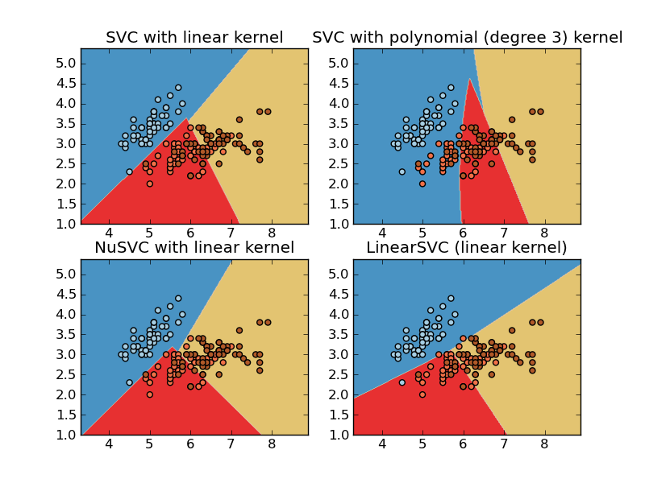

Plot different SVM classifiers in the iris dataset¶
Comparison of different linear SVM classifiers on the iris dataset. It will plot the decision surface for four different SVM classifiers.

Python source code: plot_iris.py
print __doc__
import numpy as np
import pylab as pl
from scikits.learn import svm, datasets
# import some data to play with
iris = datasets.load_iris()
X = iris.data[:, :2] # we only take the first two features. We could
# avoid this ugly slicing by using a two-dim dataset
Y = iris.target
h=.02 # step size in the mesh
# we create an instance of SVM and fit out data. We do not scale our
# data since we want to plot the support vectors
svc = svm.SVC(kernel='linear').fit(X, Y)
rbf_svc = svm.SVC(kernel='poly').fit(X, Y)
nu_svc = svm.NuSVC(kernel='linear').fit(X,Y)
lin_svc = svm.LinearSVC().fit(X, Y)
# create a mesh to plot in
x_min, x_max = X[:,0].min()-1, X[:,0].max()+1
y_min, y_max = X[:,1].min()-1, X[:,1].max()+1
xx, yy = np.meshgrid(np.arange(x_min, x_max, h),
np.arange(y_min, y_max, h))
# title for the plots
titles = ['SVC with linear kernel',
'SVC with polynomial (degree 3) kernel',
'NuSVC with linear kernel',
'LinearSVC (linear kernel)']
pl.set_cmap(pl.cm.Paired)
for i, clf in enumerate((svc, rbf_svc, nu_svc, lin_svc)):
# Plot the decision boundary. For that, we will asign a color to each
# point in the mesh [x_min, m_max]x[y_min, y_max].
pl.subplot(2, 2, i+1)
Z = clf.predict(np.c_[xx.ravel(), yy.ravel()])
# Put the result into a color plot
Z = Z.reshape(xx.shape)
pl.set_cmap(pl.cm.Paired)
pl.contourf(xx, yy, Z)
pl.axis('tight')
# Plot also the training points
pl.scatter(X[:,0], X[:,1], c=Y)
pl.title(titles[i])
pl.axis('tight')
pl.show()